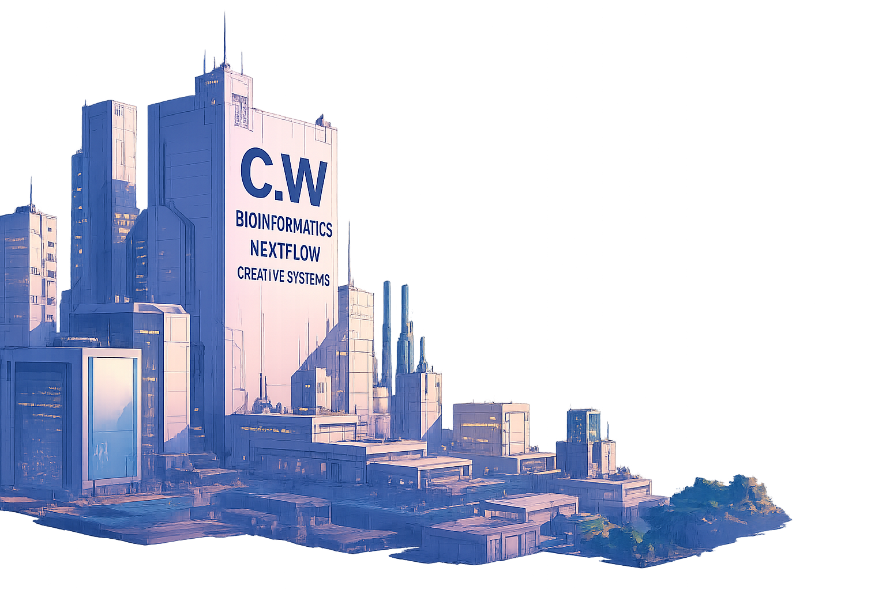

Interactive reporting system integrating sequencing metrics, dynamically created from any Nextflow / nf-core pipeline output
• Automated FASTQ Integrity & Contamination Screening
• No Command Line Required
• Intuitive Drag & Drop streamlined interface
• Interactive Visual Feedback
• Instant Identification of Host & Environmental Contaminants
• Automated Multi-Sample Reporting
• Secure Data Handling
• Automated MultiQC Generation
• No Command Line Required
• Intuitive Drag & Drop streamlined interface
• Interactive Visual Feedback
• Dynamic LLM Insights
• Secure Data Handling